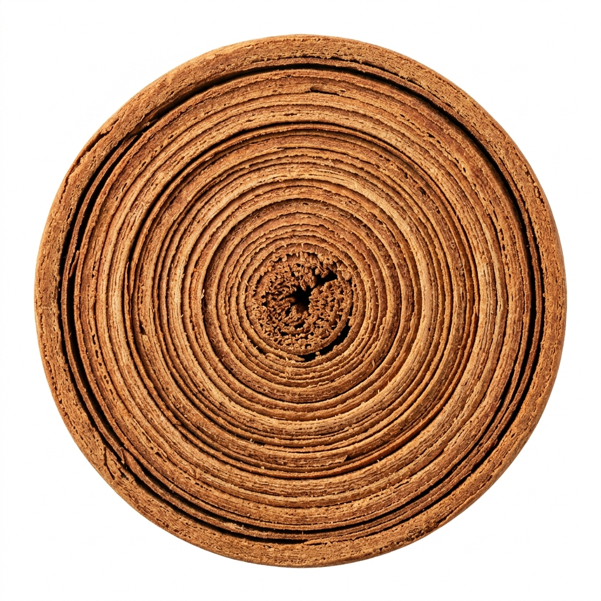
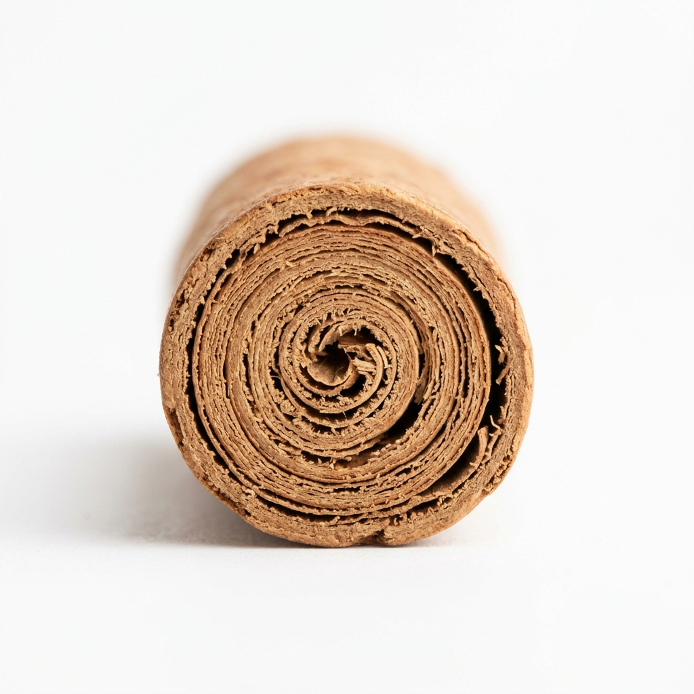

New Inspection Scan
Bark view & cross-section analysis
Scans Today
+12%
28
vs yesterday
Alba & C5 Ratio
91.4%
Recent Scans

SMP-731398
2 min ago
Ø 6.2 mm
Alba Grade
SMP-731397
14 min ago
Ø 8.1 mm
C5 Super

SMP-731396
28 min ago
Ø 12.4 mm
Commercial M4
SMP-731395
41 min ago
Ø 5.8 mm
Alba Grade